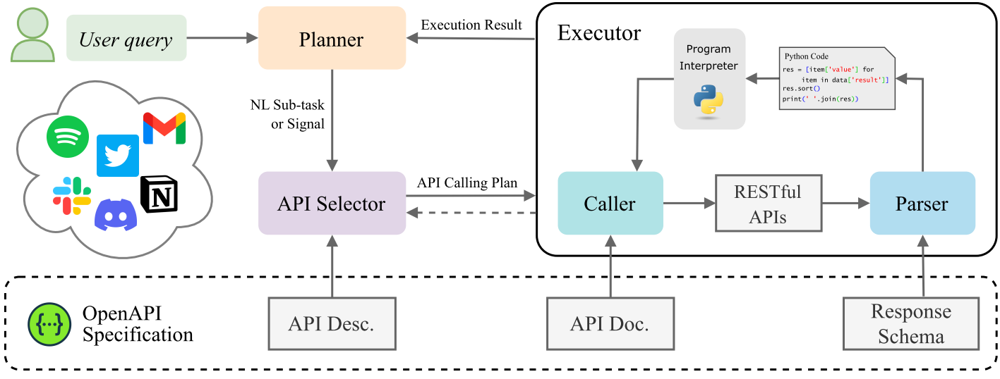
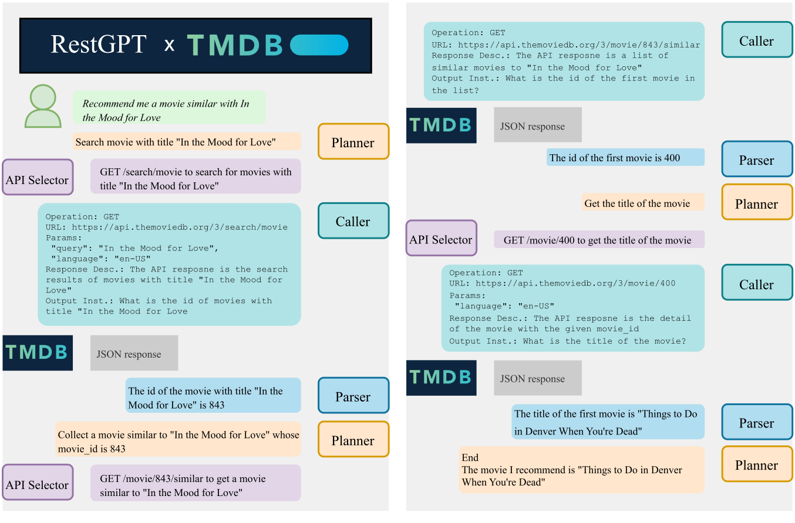
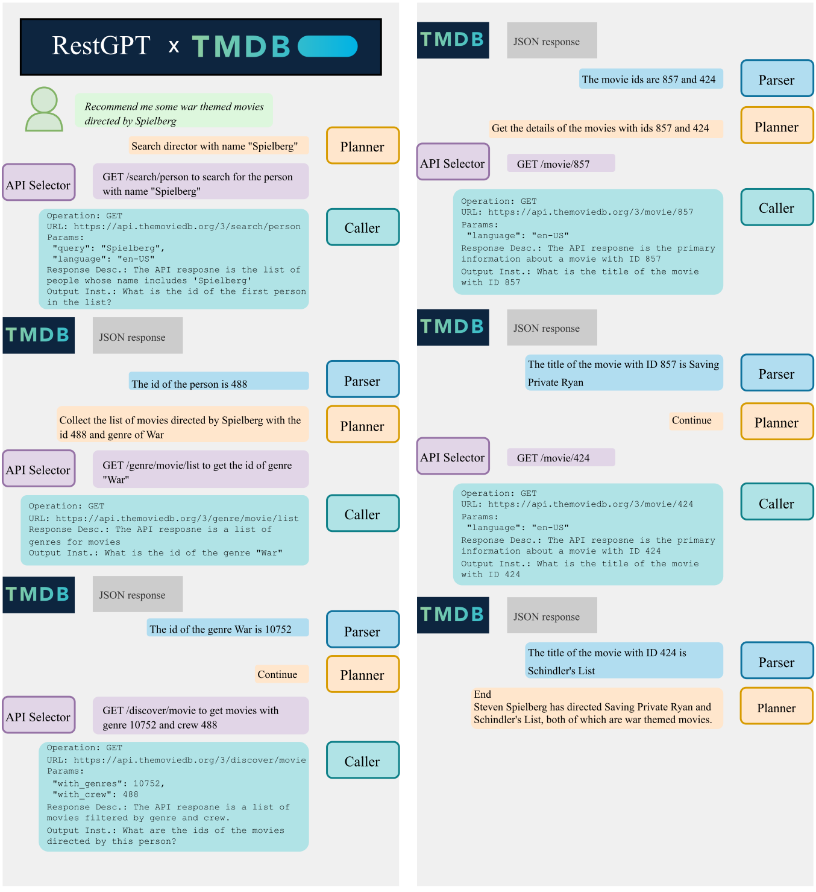
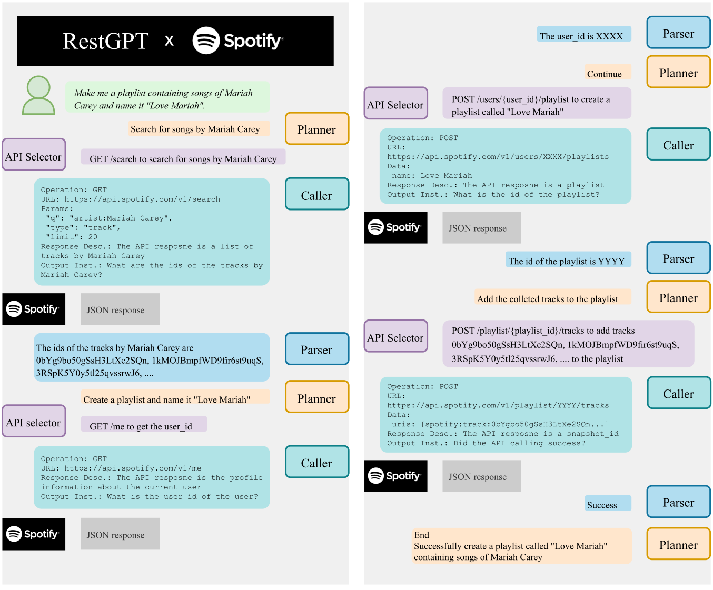
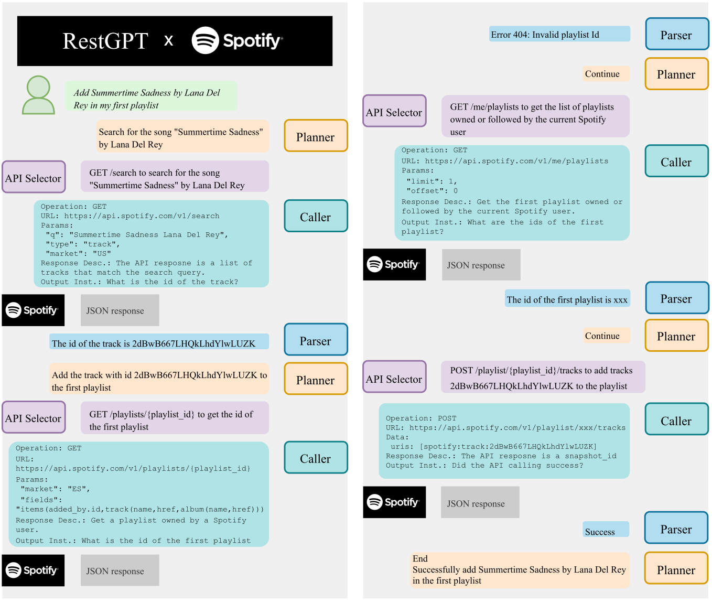

RestGPT is a framework that can connect large language models with real-world applications, such as music player and movie information database, via RESTful APIs to automatically tackle complex user queries.
To address the practical challenges of planning and API usage, we propose a coarse-to-fine online planning mechanism to enhance the ability of planning and API selection.
For the complex scenario of calling RESTful APIs, we also specially designed an API executor to formulate parameters and parse API responses.
Experiments show that RestGPT is able to achieve impressive results in complex tasks and has strong robustness, which paves a new way towards AGI.

RESTful APIs
RESTful APIs have become a popular way to expose functionalities and data of web services to client applications.
There are also millions of RESTful APIs available on Internet, such as Spotify, Twitter, Gmail, etc.
RESTful APIs usually follow OpenAPI Specification (OAS), which describes the operations, parameters, and response schemas of each API endpoint.
RestGPT
RestGPT consists of three main components: a Planner, an API Selector, and an Executor, the core of each component is prompting an LLM.
Unlike previous work that generates static plans which are not adaptable to environment feedback, RestGPT employs a coarse-to-fine online planning framework.
Specifically, the planner decomposes user instructions into sub-tasks in the format of natural language, which are then mapped to API calls by the API selector, forming a coarse-to-fine task planning.
On the other hand, the planner performs online planning of subsequent sub-tasks based on the executor's response.
To execute RESTful API calls, we further divided the Executor into two modules: a Caller and a response Parser.
The caller reads the complete API documentation to organize the API call parameters while the parser generates Python code that parses responses based on the response schema defined in OAS.
Examples




BibTeX
@article{song2023restgpt,
author = {Yifan, Song},
title = {RestGPT: Connecting Large Language Models with RESTful APIs},
journal = {arXiv},
year = {2023},
}